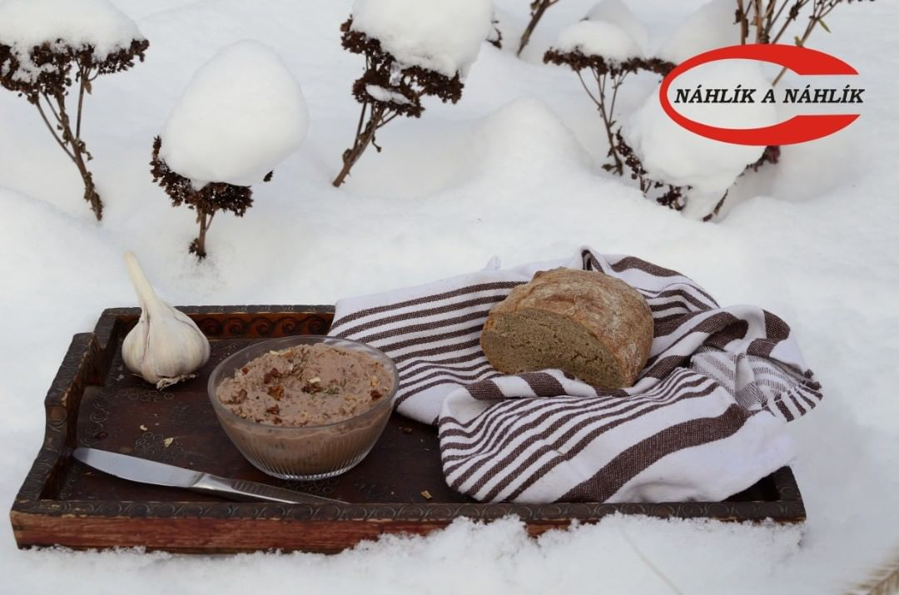

Guláše podľa @nahlikanahlik — Normy Jedál
Také vám po zimních radovánkách vždy tolik vyhládne? Máme pro vás tip, jak si poradit přímo "královsky"! KRÁLOVSKÁ JATÝRKA jsou mezi vámi velmi oblíbená pro svou nezaměnitelnou chuť. Jedná se o jemnou játrovou paštiku s hrubšími kousky jater. Z vašich ohlasů víme, že když je jednou ochutnáte, rychle si je zamilujete.
Přejeme královský víkend!
Objednávejte zde: www.nahlikovi.cz
#jidlo #food #polevky #pastiky #hotovky #masovespeciality #nahlikanahlik #gulase #tradice #chut